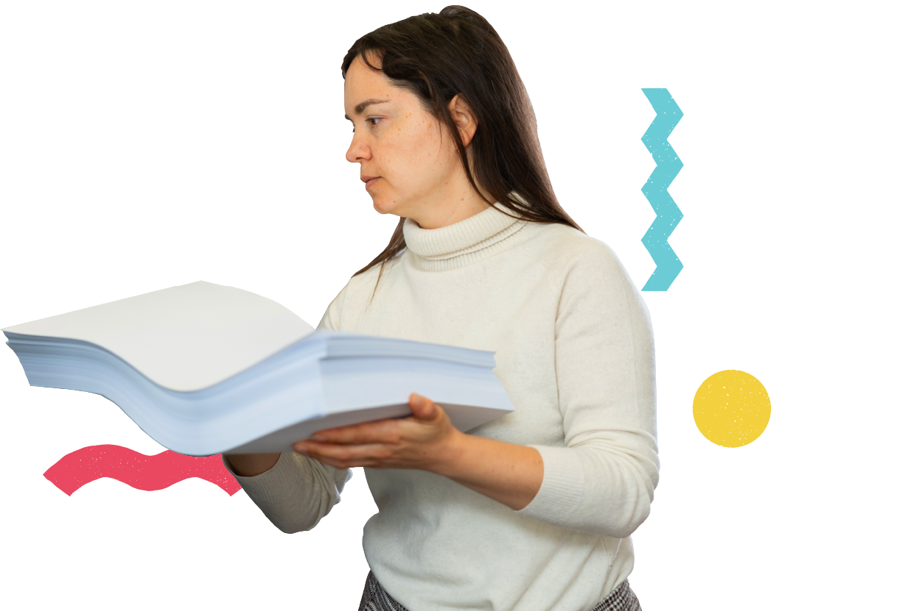
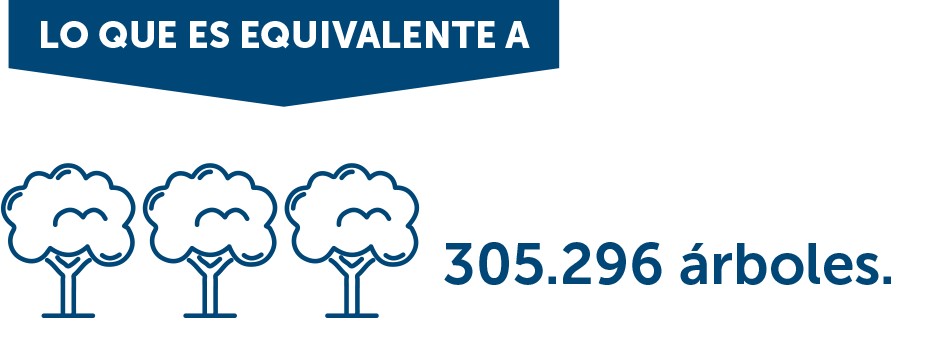
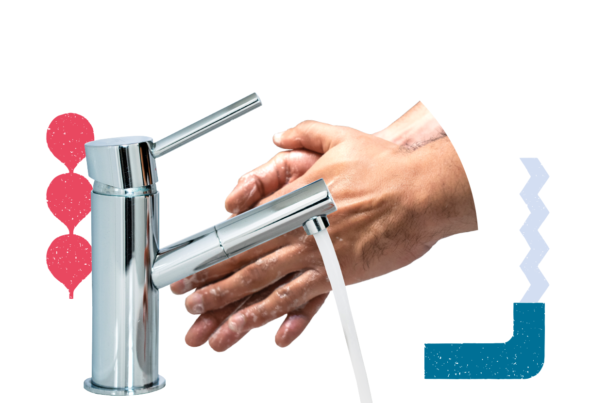
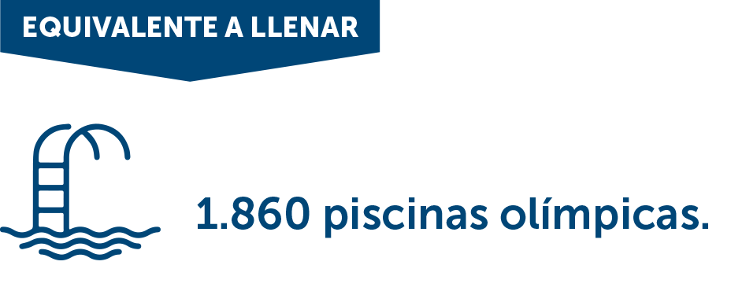

<div id="carouselExampleControls" class="carousel slide" data-bs-ride="carousel">
    <div class="carousel-inner">
      <div class="carousel-item active">
        <div class="fondo fondo-1">
            
            
            <p class="text">
                El uso de papel alcanza las <span>4.884.737 resmas</span>
            </p>
        </div>
      </div>
      <div class="carousel-item">
        <div class="fondo fondo-2">
            
            
            <p class="text2">
                En cuanto al consumo de agua, apartado estatal <span>consume unos <br> 
                4.440.670 m³ al año</span>
            </p>
        </div>
      </div>
    <button class="carousel-control-prev" type="button" data-bs-target="#carouselExampleControls" data-bs-slide="prev">
      <span class="carousel-control-prev-icon" aria-hidden="true"></span>
      <span class="visually-hidden">Previous</span>
    </button>
    <button class="carousel-control-next" type="button" data-bs-target="#carouselExampleControls" data-bs-slide="next">
      <span class="carousel-control-next-icon" aria-hidden="true"></span>
      <span class="visually-hidden">Next</span>
    </button>
</div>